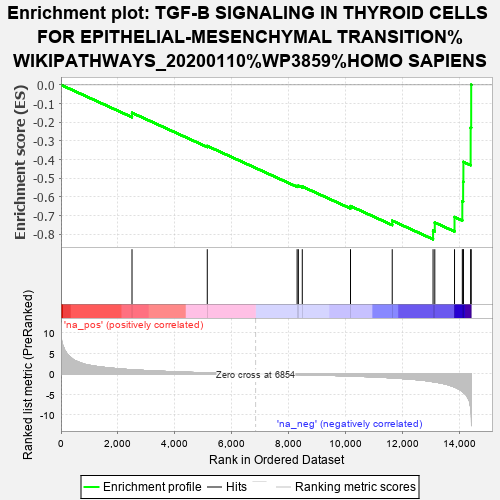
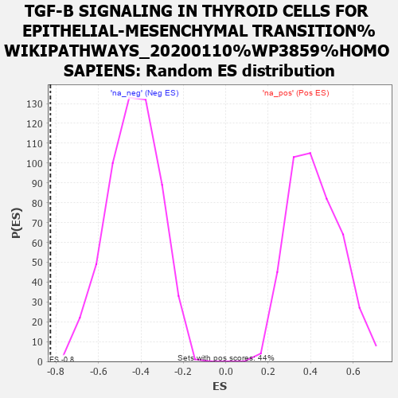

| | | Dataset | MBD2KO_pre.rnk |
| Phenotype | NoPhenotypeAvailable |
| Upregulated in class | na_neg |
| GeneSet | TGF-B SIGNALING IN THYROID CELLS FOR EPITHELIAL-MESENCHYMAL TRANSITION%WIKIPATHWAYS_20200110%WP3859%HOMO SAPIENS |
| Enrichment Score (ES) | -0.8270644 |
| Normalized Enrichment Score (NES) | -1.89397 |
| Nominal p-value | 0.0 |
| FDR q-value | 0.03167496 |
| FWER p-Value | 0.308 |
Table: GSEA Results Summary

Fig 1: Enrichment plot: TGF-B SIGNALING IN THYROID CELLS FOR EPITHELIAL-MESENCHYMAL TRANSITION%WIKIPATHWAYS_20200110%WP3859%HOMO SAPIENS
Profile of the Running ES Score & Positions of GeneSet Members on the Rank Ordered List
| PROBE | GENE SYMBOL | GENE_TITLE | RANK IN GENE LIST | RANK METRIC SCORE | RUNNING ES | CORE ENRICHMENT | | 1 | ID1 | | | 2497 | 0.977 | -0.1496 | No |
| 2 | MAPK3 | | | 5144 | 0.240 | -0.3274 | No |
| 3 | MAPK1 | | | 8303 | -0.186 | -0.5419 | No |
| 4 | AKT1 | | | 8347 | -0.192 | -0.5402 | No |
| 5 | TGFB1 | | | 8485 | -0.213 | -0.5446 | No |
| 6 | FN1 | | | 10181 | -0.533 | -0.6493 | No |
| 7 | CDH1 | | | 11648 | -0.975 | -0.7276 | No |
| 8 | SNAI1 | | | 13084 | -1.914 | -0.7810 | Yes |
| 9 | SMAD3 | | | 13145 | -1.989 | -0.7374 | Yes |
| 10 | RUNX2 | | | 13839 | -3.219 | -0.7080 | Yes |
| 11 | SMAD2 | | | 14113 | -4.280 | -0.6240 | Yes |
| 12 | SMAD4 | | | 14142 | -4.410 | -0.5199 | Yes |
| 13 | CDH6 | | | 14151 | -4.474 | -0.4128 | Yes |
| 14 | VIM | | | 14406 | -8.362 | -0.2294 | Yes |
| 15 | SNAI2 | | | 14425 | -9.619 | 0.0007 | Yes |
Table: GSEA details [plain text format]

Fig 2: TGF-B SIGNALING IN THYROID CELLS FOR EPITHELIAL-MESENCHYMAL TRANSITION%WIKIPATHWAYS_20200110%WP3859%HOMO SAPIENS: Random ES distribution
Gene set null distribution of ES for TGF-B SIGNALING IN THYROID CELLS FOR EPITHELIAL-MESENCHYMAL TRANSITION%WIKIPATHWAYS_20200110%WP3859%HOMO SAPIENS